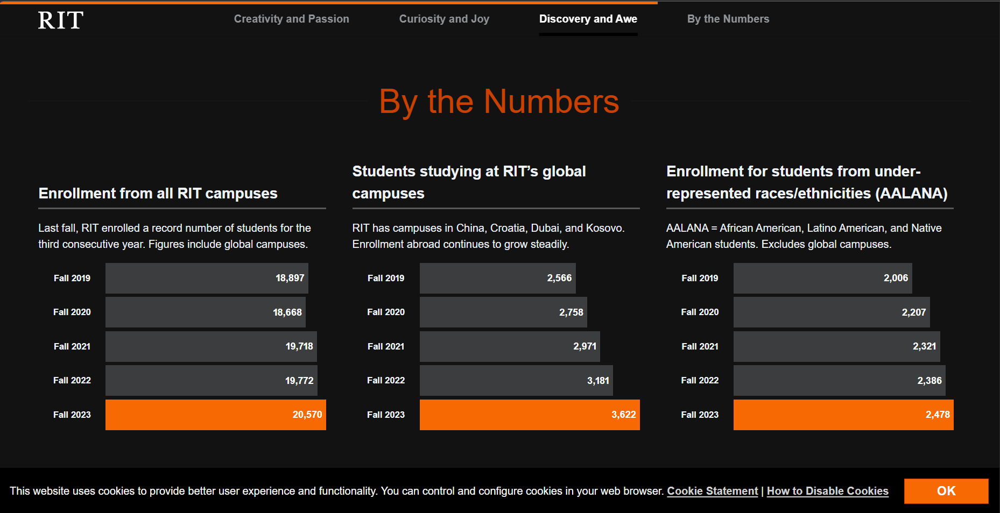
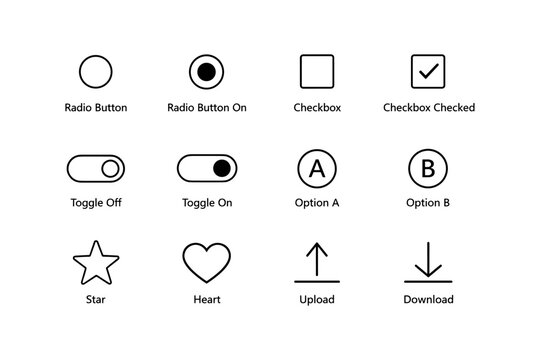
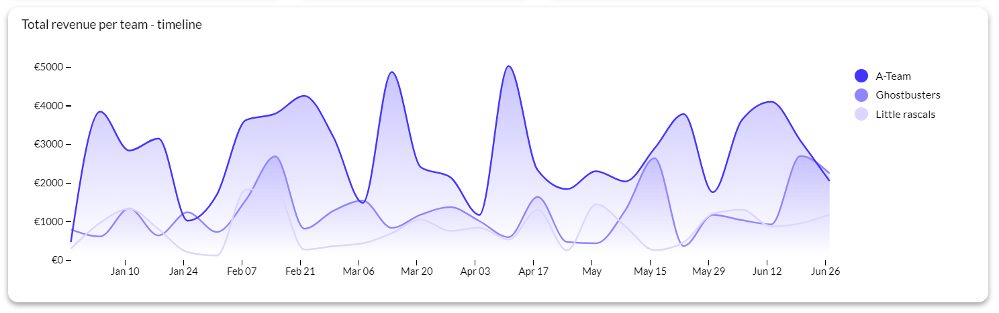
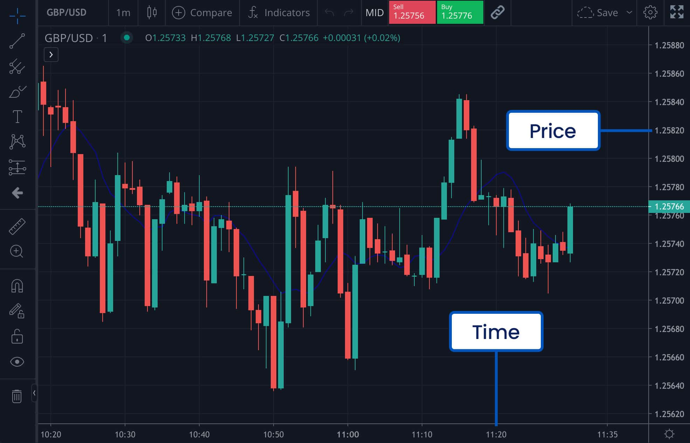

Objective
Given an image embedded within a webpage context, you will apply an alt text decision procedure to correctly identify the image role (decorative, informative, functional, or complex) and produce context-aligned alt text.
Success criteria: correct role classification and appropriate alt text in at least 3 out of 4 scenarios.
Alt Text Decision Flow
- Identify the image role (decorative, informative, functional, complex)
- Follow the correct branch based on role
- Write alt text focused on purpose and meaning
- Remove redundancy (avoid “image of”; don’t repeat nearby text)
- Check clarity and confirm it fits the context
Demonstration

Key signals (keywords only)
- Identify role
- Determine purpose
- Draft alt text
- Remove redundancy
- Check clarity
I start by identifying the role of the image. This visual presents multi-year enrollment data using bars and numeric values, so it qualifies as a complex image.
The purpose is to show enrollment growth over time.
A weak alt text would be “Enrollment numbers chart.” That’s too vague.
A stronger version is: “Bar chart showing RIT enrollment increasing from 18,897 in Fall 2019 to 20,570 in Fall 2023.”
This version summarizes the key trend and reflects the image’s purpose.
Because this is complex data, a longer description should also appear in the surrounding content. For example, a caption might explain that enrollment has steadily increased over the past five years, reaching its highest point in 2023.
Example Outputs by Role
These examples show what role-appropriate alt text looks like. Use them as a reference before you start practice.
Informative
Functional

Decorative

alt=""Complex

Practice 1 – Informative Image
Context: This image appears inside an article titled “Market Volatility Surges on Wall Street.”
Practice 2 – Functional Image

Context: This image is a clickable control that allows users to choose a display preference.
Practice 3 – Decorative Image
Context: This image is used as a full-width background behind the headline “Experience Freedom.”
alt=""
Practice 4 – Complex Image

Context: This chart appears in a financial report explaining intraday price movement.
Results
Your score: 0 / 4